选品推荐 / 单品评估 / 对比决策 —— 三种最常见的购物 query，展示回答结构和组件使用
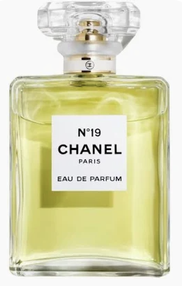
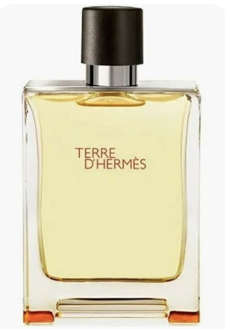
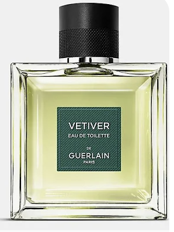
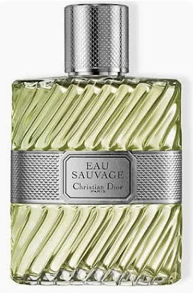
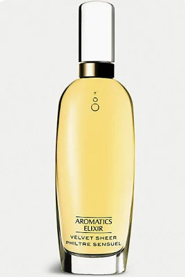
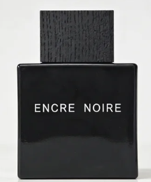
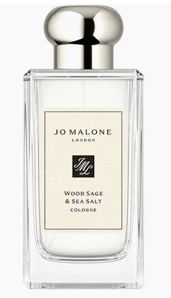
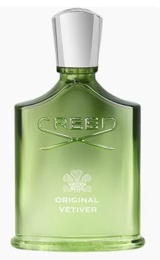
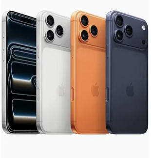
| 安热沙小金瓶 | 蜜丝婷小黄帽 | |
|---|---|---|
| SPF / PA | SPF50+ PA++++ | SPF50+ PA+++ |
| 水中测试 | 80 分钟 | 无标注 |
| 耐摩擦耐沙 | 明确标注 | 无 |
| 质地 | 乳液 · 微光泽 | 乳液 · 轻薄哑光 |
| 酒精 | 含酒精 8%+ | 不含酒精 |
| 卸妆 | 需卸妆 | 洗面奶可卸 |
| 参考价 | ¥200 / 60ml（免税 ¥100+） | ¥70 / 60ml |
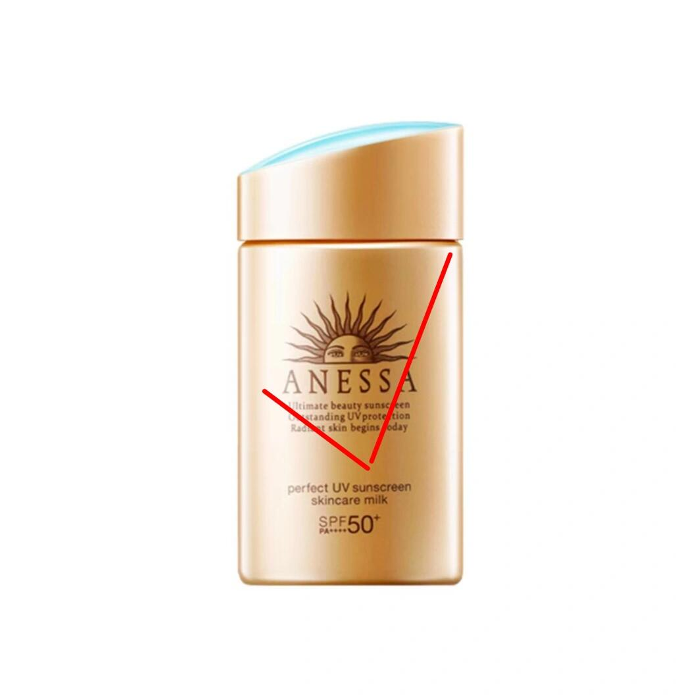
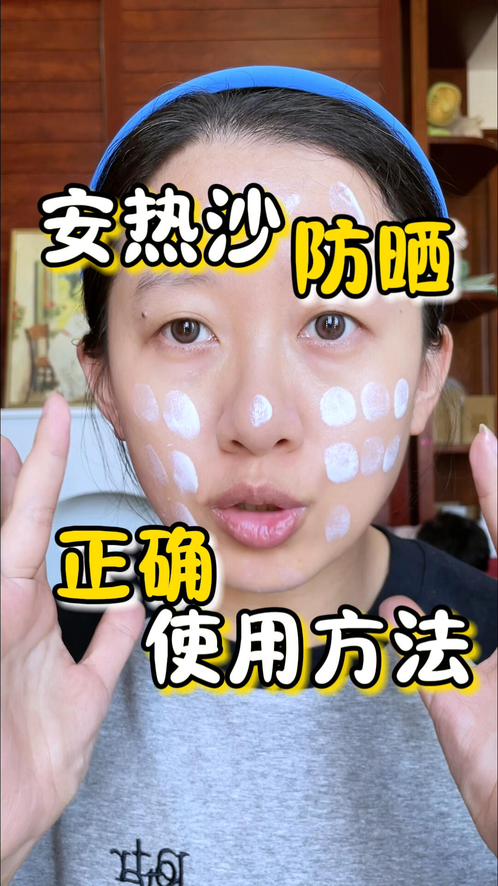
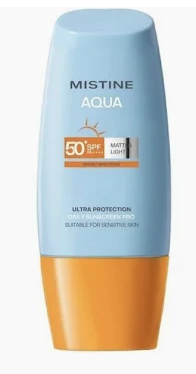
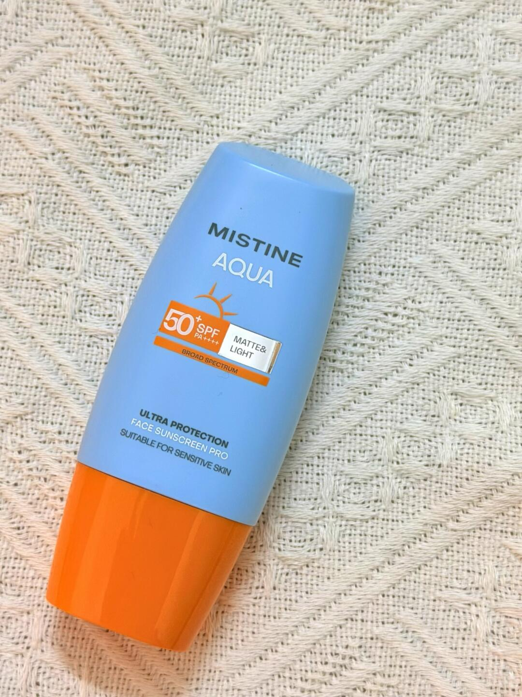
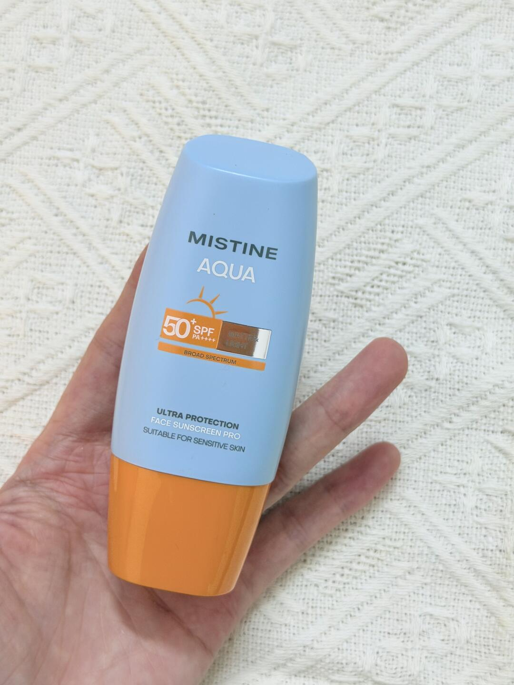